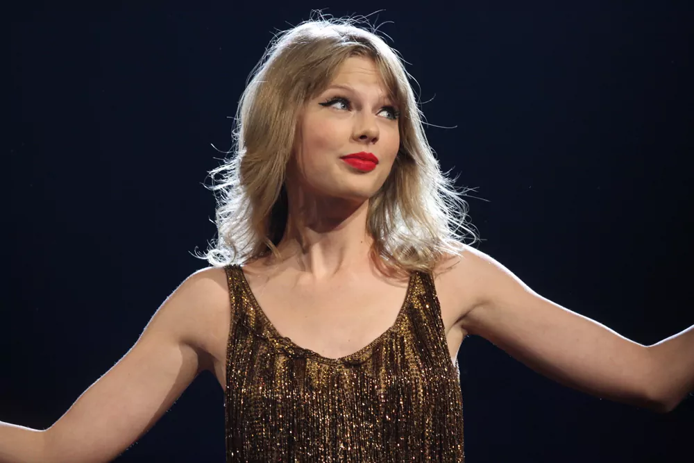

Taylor Swift
Biografía
Taylor Alison Swift (West Reading, Pensilvania, 13 de diciembre de 1989) es una cantautora estadounidense. Sus composiciones autobiográficas y sus reinvenciones artísticas la han convertido en un icono cultural del siglo XXI. Es la artista musical con mayores ingresos por conciertos en directo, la mujer más rica del mundo de la música y una de las artistas musicales con más ventas de todos los tiempos.
Swift firmó con Big Machine Records en 2005 y debutó como cantante de country con los álbumes Taylor Swift (2006) y Fearless (2008). Los sencillos «Teardrops on My Guitar», «Love Story» y «You Belong with Me» tuvieron un gran éxito tanto en las emisoras de radio country como en las de pop. Speak Now (2010) amplió su sonido country pop con influencias rock y Red (2012) presentó una producción más pop. Recalibró su identidad artística del country al pop con el álbum de synth pop 1989 (2014) y de hip hop Reputation (2017). A lo largo de la década de 2010, acumuló los números uno del Billboard Hot 100 «We Are Never Ever Getting Back Together», «Shake It Off», «Blank Space», «Bad Blood» y «Look What You Made Me Do».
Después de firmar con Republic Records en 2018, Swift volvió a grabar cuatro de sus álbumes de Big Machine debido a una disputa con el sello discográfico, lo que provocó un debate en la industria sobre los derechos de los artistas. Lanzó el ecléctico álbum pop Lover (2019), los álbumes indie folk Folklore (2020) y Evermore (2020), los álbumes pop minimalistas Midnights (2022) y The Tortured Poets Department (2024) y el álbum soft rock The Life of a Showgirl (2025). Entre sus sencillos número uno en la lista Billboard Hot 100 en la década de 2020 se encuentran «Cardigan», «Willow», «All Too Well», «Anti-Hero», «Cruel Summer», «Is It Over Now?» y «Fortnight» «The Fate of Ophelia» y «Opalite». Su gira The Eras Tour (2023-2024) es la gira de conciertos más taquillera de todos los tiempos. La película que la acompaña, The Eras Tour (2023), se convirtió en la película de concierto más taquillera de la historia.
Swift es la primera artista en vender más de un millón de copias de cada uno de sus siete álbumes durante la primera semana en Estados Unidos y ha sido nombrada artista discográfica global del año por la IFPI en cinco ocasiones. Publicaciones como Rolling Stone y Billboard la han incluido entre los mejores artistas de todos los tiempos. Es la primera persona del mundo artístico en ser nombrada persona del año por la revista Time (2023). Entre sus galardones se incluyen 14 premios Grammy, entre ellos un récord de cuatro premios al álbum del año, y un premio Primetime Emmy. Es la artista más premiada de los premios American Music, los Billboard Music Awards y los MTV Video Music Awards. Swift, que es objeto de una amplia cobertura mediática, cuenta con una base de fanes global conocida como swifties.
Discografía
| Álbum | Año |
|---|---|
| Taylor Swift | 2006 |
| Fearless | 2008 |
| Speak Now | 2010 |
| Red | 2012 |
| 1989 | 2014 |
| Reputation | 2017 |
| Lover | 2019 |
| Folklore | 2020 |
| Evermore | 2020 |
| Midnights | 2022 |
| The Tortured Poets Department | 2024 |
| The Life of a Showgirl | 2025 |
